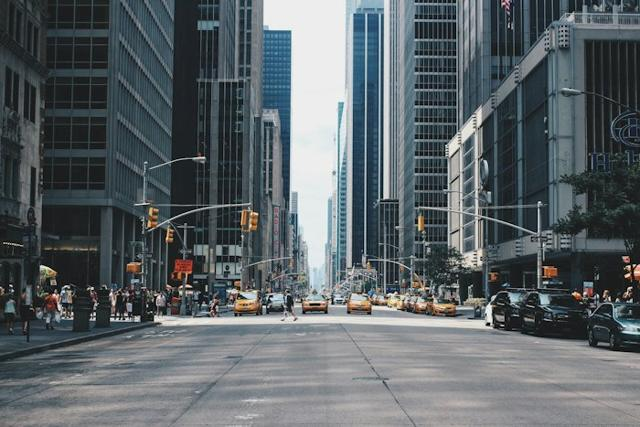

Restyle
City walk · 0:24
240

Original
Preview frame
Turn the street into a future city at night. Keep the traffic moving.
Look
Rendered on your footage
Future city
Noir
Golden hour
Teal & orange
16mm film
Strength
75%
Preview · free
Restyle
· 48 cr